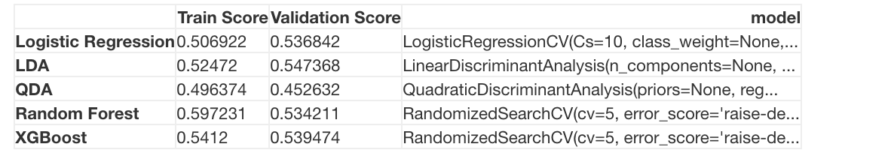

To begin, we naively used all the features we have feature engineered. Similar to before, we fitted different classification models on our data and select the one with the best validation accuracy.
We ran Logistic Regression, LDA, QDA, Random Forest, and XGBoost and got the following results: 
We choose the final model to be the one with the highest validation score, which is LDA in this case.
Similar to before, we used three different approaches to predict the test set. For the WC Playoff Model approach, we continue to use logistic regression.
LDA scores
It seems that our model with all the features is a decent improvement to the baseline model for the test set in all three approaches. However, the lower train and validation scores in general is a bit concerning. Like before, random forest seems to perform similarly to the best model, so we will utilize its feature importance again.
Random Forest features
The ratings of the team are still pretty important features. Many of the features we have engineered seem to be decent features as well, which should not be surprising from the EDA. Besides 3 of them, many of the momentum features are near the bottom, and this might be due to the fact that these momentum features are obviously highly correlated with each other, and this may be causing the lower train and validation scores. Many of the features in our feature are highly correlated; we would want to deal with this multicollinearity somehow to see if we can achieve better results.
We saw that our models in general performed similarly in terms of train/validation. Why not try stacking the models together? We will stack the logistic regression, LDA, QDA, Random Forest, and XGBoost models.
We got the following results: Stacking Model Train Score: 0.5662491760052736 Stacking Model Validation Score: 0.5368421052631579 Stacking Model Test Score at 90 mins: 0.609375 Stacking Model Test Score at end (Softmax): 0.625 Stacking Model Test Score at end (WC Playoff Model): 0.640625
It seems that stacking in this case did not really help that much. The test accuarcies are still decent though, higher than those of the baseline model.
As mentioned before, we are a bit concerned about the fact that our features are highly correlated, which potentially affects our predictions.
Principal Component Analysis (PCA) is a way to reduce the dimensionality of dataset by summarizing the variation in our data into a set of new predictors called principal components. These principal components are linear combinations of our original predictors. By selecting the top few principal components, we are projecting our dataset into the space defined by these components. This means that we are projecting our dataset onto a space of smaller dimensionality. Importantly, this will help us reduce the multicollinearity that might be affecting our predictions. Each principal component is constructed such that they are orthogonal with each other. Nonetheless, we understand that this will limit the interpretability of our coefficients.
Principal Component Regression (PCR) is basically using the new predictors of reduced dimensionality in a regression problem. In this problem, we inputed the new principal components into our standard logistic regression. In order to decide the number of principal components to keep, we cross-validated the number of principal components that gives us the best validation accuracy. For the WC Playoffs Model, we will also use PCA to find the number of components that maximizes the train accuracy and fit a PCR model to the World Cup playoffs data.
PCR Plot
We got the following results: Best Validation Accuracy Number of Components: 3 PCR (Best) Train Score: 0.5042847725774555 PCR (Best) Validation Score: 0.5473684210526316 PCR (Best) Test Score at 90 mins: 0.5625 PCR (Best) Test Score at end (Softmax): 0.578125 PCR (Best) Test Score at end (WC Playoffs Model): 0.609375
In this case, PCR was not a good option. The test accuracy decreased quite significantly. We may need to take into the account the outcome as well when we reduce the dimension of our feature set.
Another way that can help us deal with the issues of multicollinearity in our dataset is Partial Least Squares Regression (PLSR). Similar to PCA, PLSR involves projecting the predictors onto orthogonal components. However, the PLSR components are constructed such that they not only approximate the predictors, but are also well correlated with the response. As such, we assume that both the predictors and the response are functions of (reduced) principal components. In this problem, our response variable is a multi-class categorical variable. As such, we could use the PLS2 algorithm which simultaneously decomposes on the multi-class variable directly. We could also use the PLS1 algorithm on each category in our response variable separately.
To demonstrate how the Partial Least Squares algorithms works, we have included a pseudo-code for PLS1:
Set \(X_0 = X\), and \(y_0 = y\)
for \(h = 1, 2, ... r\) do (where r is the dimension of the predictors)
\(\hspace{1cm} \mathbf{w_h} = \mathbf{X^T_{h-1}y_{h-1}/y^T_{h-1}y_{h-1}}\) (regress predictors \(x_j\) on response \(y\))
\(\hspace{1cm} ||\mathbf{w_h}|| = 1\) (normalize)
\(\hspace{1cm} \mathbf{z_h} = \mathbf{X_{h-1}w_h/w^T_hw_h}\) (regress predictors \(x_j\) on weights \(w_h\))
\(\hspace{1cm} \mathbf{p_h} = \mathbf{X^T_{h-1}z_h/z^T_hz_h}\) (regress predictors \(x_j\) on components \(z_h\))
\(\hspace{1cm} \mathbf{X_h} = \mathbf{X_{h-1} - z_hp^T_h}\) (deflate \(X_{h-1}\))
\(\hspace{1cm} d_h = \mathbf{y^T_hz_h/z^T_hz_h}\) (regress response \(y_h\) onto components \(z_h\))
\(\hspace{1cm} \mathbf{y_h} = \mathbf{y_{h-1} - d_hz_h}\) (deflate \(y_{h-1}\))
end for
The PLS2 algorithm is just an extension for a response variable with more than two outcomes.
Importantly, PLS selects components which gives us the greatest reduction in the covariance of our predictors and response. If we represent our components as \(\mathbf{z}\), and the response as \(\mathbf{y}\), it can be shown that PLSR optimizes with respect to the weights \(\mathbf{w}\)
It can thus be seen that PLSR tries to maximize the correlation between the components and the response whilst trying to maximize the variance captured by the components.
This not only allows us to resolve the multicollinearity issues through the creation of orthogonal components just as in PCR, but also allows us to create components that are correlated with the response. It is likely that this might perform even better than PCR.
We got the following results for PLS1-DA: Best Validation Accuracy Number of Components: 16 PLS1-DA (Best) Train Score: 0.5227422544495716 PLS1-DA (Best) Validation Score: 0.5552631578947368
PLS 1
We got the following results for PLS2-DA: Best Validation Accuracy Number of Components: 9 PLS2-DA (Best) Train Score: 0.5181278839815425 PLS2-DA (Best) Validation Score: 0.5526315789473685
PLS 1
For the WC Playoffs Model, we will also fit the PLS model with number of components that maximizes the train accuracy. In the case of binary labels, PLS1-DA and PLS2-DA are the same, so we only have one result for the WC Playoffs Model.
PLS1-DA (Best) Test Score at 90 mins: 0.640625 PLS1-DA (Best) Test Score at end (Softmax): 0.6875 PLS2-DA (Best) Test Score at 90 mins: 0.59375 PLS2-DA (Best) Test Score at end (Softmax): 0.625 PLS1-DA/PLS2-DA (Best) Test Score at end (WC Playoffs Model): 0.65625
Compared to the full model, we do not see much change in the PLS1-DA model on the test set while we see a decrease in performance of PLS2-DA on the test set, although PLS1-DA does perform better in the second approach than the full model does; thus PLS1-DA is the best model we have seen so far! What’s more important is that the validation scores for PLS1-DA were higher than those in the full model. It is likely that multicollinearity was causing the decrease in our validation scores.
Now, suppose we don’t actually know anything about the test set. Which model would we have actually chosen? Like before, we can only look at the validation scores.
Final models
Based on validation scores, we would have chosen PLS1-DA, the best model!
Let’s see the confusion matrices for our best model, PLS1-DA.
Confusion Matrix
The model is actually predicting some draws now for the training set and test set, although still very little. As mentioned before, it is just very hard to predict draws, but this is definitely an improvement compared to the baseline model.
Compared to the baseline model, it seems that the model is better in predicting when “home” team loses in the test set in all three approaches. This might be due to some bias of how we feature engineer. Since none of us really were experts in soccer, we chose features that we observed from the World Cup alone, so these features might be biased toward the test set.
The Softmax approach had higher home loss and home win accuracies than the WC Playoff Model approach; this might be due to the small training set for the playoff matches, so we could just be overfitting to the traing set. As mentioned in the baseline model, we cannot really compare the confusion matrices of the three approaches to the test set, as the true labels between the 90 minutes approach are different from those than the true labels in the other two approaches.